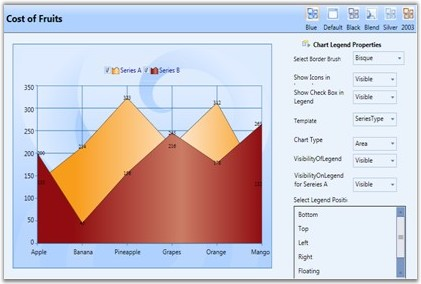

Essential Chart allows you to customize the legend icon of a chart. You can change the legend Icon of a chart legend by using the options provided. The legend icons can be represented in two ways:
· It can be set as a symbol.
· It can be set as the chart icon (in case of chart series).
The LegendIcon property is used to set the required icon.
· If LegendIcon property is set to a symbol, it will be displayed as the selected legend icon.
· If LegendIcon property is set to the SeriesType, the corresponding chart icon will be displayed as legend icon.
Properties
The following table provides more information on the property used.
|
Property |
Description |
Type |
Value Returned |
|
LegendIcon |
The legend icon is displayed according to the option selected. |
Dependency |
Enum(ChartLegendIcon) |
Events
The following table provides more information on the event used.
|
Event |
Event Trigger |
Event Args |
Purpose |
|
LegendIconChanged |
The event is triggered by calling a method when the value of LegendIcon is changed. |
OnLegendIconChanged |
The Icon is changed whenever the value for LegendIcon property changes. |
Methods
The following table provides more information on the method used.
|
Method |
Parameters |
Return Type |
Description |
|
UpdateLegendIcon |
ChartSeries |
Void |
Updation of the legend icon with a new icon. |
Customizing Legend Icon
The legend icon can be customized by using the following code snippets.
|
[XAML]
<syncfusion:ChartLegend Name="chrtlgnd" BorderThickness="0.5" ></syncfusion:ChartLegend> <syncfusion:ChartSeries Name="SeriesA" LegendIcon="Circle" Type="Bar" BindingPathX="FruitName" BindingPathsY="Price,NumberOfFruits,FruitID,Year" Label="Series A" Stroke="#FF000000" StrokeThickness="0.5" ></syncfusion:ChartSeries> |
|
[C#]
Chart1.Areas[0].Series[0].LegendIcon = ChartLegendIcon.Circle; |
Run the code. The following output is displayed.

Figure 120: Chart Legend Icon Changed